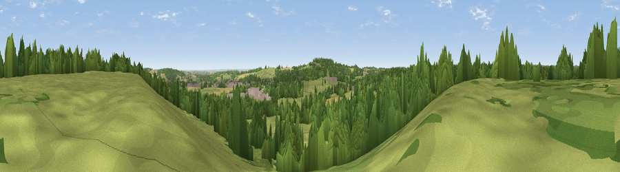

Viewpoint near Calverton
#25283 in England · top 26% of its area beats it · near CalvertonWhere it is
The exact computed spot (SK 59925 50825). Click the marker for map links.
The view, rendered

A 360° render of this exact spot computed from the terrain model, tree cover and land cover — summer colours, afternoon light, calibrated against photographs of famous viewpoints. Real trees, hedges and buildings will differ in detail.
The panorama
Grey silhouette: terrain skyline in each direction (720 bearings, Earth curvature and refraction included). Dashed green: skyline with trees (+15 m) and buildings (+8 m) as obstacles. Blue strip: how far the ground is visible on each bearing.
Where the view opens
Wedge length = distance to the farthest visible ground on that bearing (vegetation-aware). Rings at 10, 25 and 50 km.
What fills the view
42% grassland · 38% woodland · 16% cropland · 5% built-up
Angular shares of the visible panorama (visual magnitude), not map area. Landscape diversity 0.51 (0–1 Shannon).
Key numbers
More beautiful places nearby
The staircase of upgrades: each row has a higher view potential than everything closer. Driving times are estimates from straight-line distance, calibrated against real road routing — check an actual route before setting out.
| Place | Direction | Drive | Score |
|---|---|---|---|
| Viewpoint near Calverton | SSE · 3 km | ~6 min | 56.9 |
| Viewpoint near Arnold | S · 4 km | ~8 min | 64.1 |
| Burstheart Hill [Thoresby Colliery] | NNE · 18 km | ~31 min | 69.3 |
| Crich Stand | W · 26 km | ~42 min | 73.0 |
| Alport Height | W · 29 km | ~46 min | 73.9 |
| Viewpoint near Woodhouse Eaves | SSW · 37 km | ~56 min | 77.7 |
| Viewpoint near Mow Cop | W · 74 km | ~98 min | 78.9 |
| Viewpoint near Mow Cop | W · 74 km | ~98 min | 80.2 |
53.05133, -1.10747 · source: screening · position refined by local search. Computed location — check access rights before visiting.